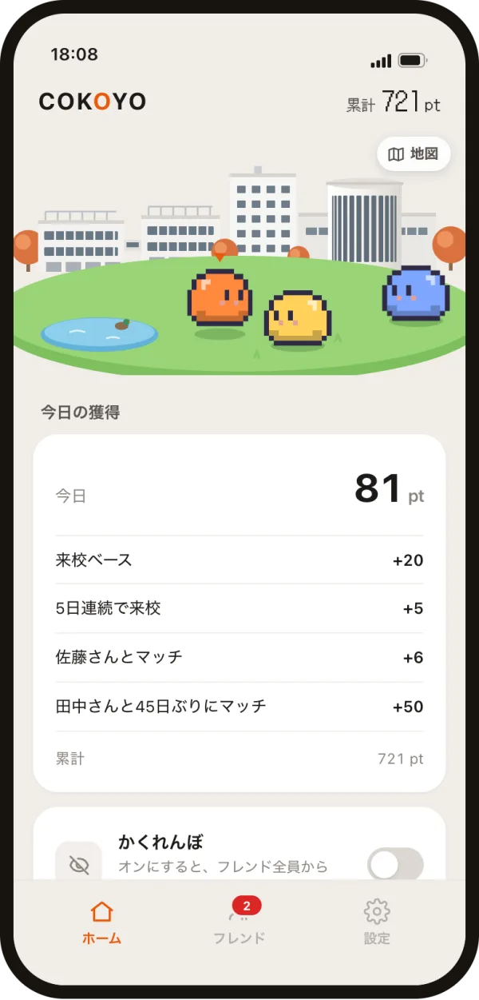
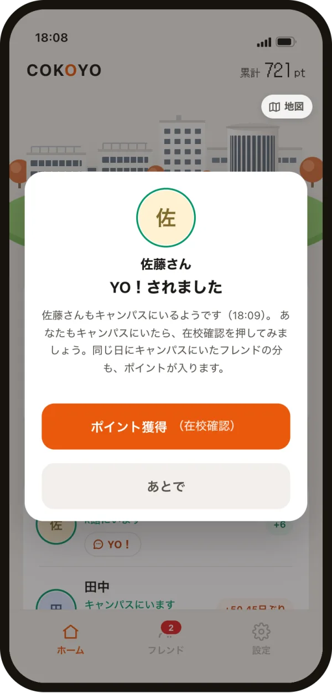
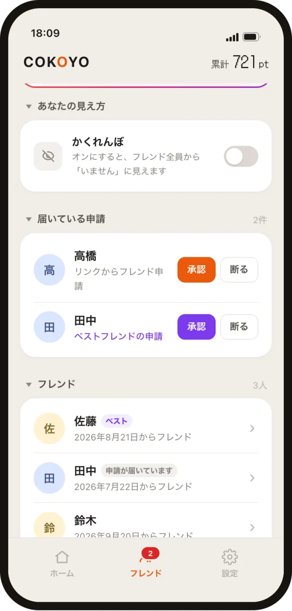
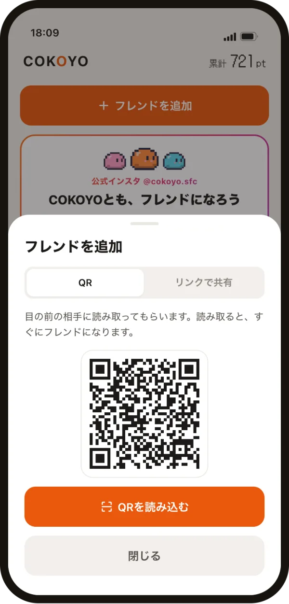

慶應義塾大学の学生向け・試作アプリ
フレンドがキャンパスにいるか、ボタンひとつで分かる
今日だれが来ているかを確かめて、同じ日にキャンパスにいたフレンドとポイントをためるアプリです。位置情報は使いません。
keio.jp の Google アカウントでログインして使います。
- 位置情報は使いません登録した端末がキャンパスのWiFiにつながっているかだけを見ます。
- 見せる範囲は相手ごとフレンドには「いる／いない」だけ。建物まで見せるのは、ベストフレンドだけです。
- いつでも隠れられますかくれんぼ中は、フレンド全員から「いません」に見えます。
COKOYOでできること
POINT 01
ボタンひとつで、だれが来ているか分かる
- 「ポイント獲得（在校確認）」を押すと、あなたとフレンドがいまキャンパスにいるかが分かります。
- キャンパスにいるフレンドは、スライムになってホームに出てきます。
- キャンパスの外からでも、フレンドの様子は確かめられます。

POINT 02
同じ日にキャンパスにいると、ポイントがたまる
- キャンパスで在校確認を押すと、その日の来校のポイントが入ります。
- フレンドも同じ日に来ていれば、そのフレンドとのマッチのポイントが加わります。
- はじめてのマッチ、ひさしぶりのマッチ、連続の来校、雨の日にはボーナスがあります。

POINT 03
「YO！」で、わたしも来てるよと知らせる
- あなたもフレンドもキャンパスにいるとき、そのフレンドに「YO！」を送れます。
- 通知をオンにしておくと、YO！されたときにプッシュ通知が届きます。iPhone は、ホーム画面に追加したアプリでだけ届きます。
- ホームのスライムを連打すると、そのフレンドに「つんつん」が届きます。
POINT 04
ベストフレンドとは、いる建物まで
- おたがいにベストフレンドにした相手とだけ、いる建物を見せ合います。
- キャンパスの地図では、ベストフレンドのスライムが建物の上に出ます。
- それ以外のフレンドに見えるのは「いる／いない」だけです。

POINT 05
見せたくない日は、かくれんぼ
- かくれんぼをオンにすると、フレンド全員から「いません」に見えます。
- かくれんぼ中も、来校のポイントは入ります。フレンドとのマッチのポイントは入りません。
- ブロックは相手に知らされず、相手からは「いません」に見えます。

POINT 06
フレンドの追加は、QRかリンクで
- 目の前の相手とは、QRをカメラで読み取ると、すぐにフレンドになります。
- 離れた相手には、招待リンクか共有キーを送ります。
- リンクやキーから来るのは申請です。承認するまで、フレンドにはなりません。
スライムの色は9色から
選んだ色は、フレンドの画面のスライムとアイコンにも出ます。プロフィールの写真も設定できます。
ホーム画面に追加できます
ストアからのインストールは要りません。ホーム画面に追加すると、アプリと同じように全画面で開けます。
端末は5台まで
スマホとパソコンなど、5台まで登録できます。どれか1台がキャンパスのWiFiにつながっていれば、在校と判定します。
はじめかた
- keio.jp でログイン慶應義塾大学の Google アカウント（keio.jp）でログインします。
- 端末を登録キャンパスのWiFiで使う端末の MAC アドレスを登録します。調べ方は、登録の画面で機種ごとに案内します。
- フレンドを追加して、押すQRかリンクでフレンドを追加したら、キャンパスで「ポイント獲得（在校確認）」を押します。
しくみと、知っておいてほしいこと
しくみ
慶應義塾大学の Google アカウント（keio.jp）でログインし、キャンパスのWiFiで使う端末の MACアドレス を登録します（最大5台）。
在校確認のボタンを押すと、COKOYO のサーバーが、キャンパスのWiFiの接続状況を公開している外部の API（api.dtc.wide.ad.jp）に、登録された MAC アドレスがいま接続しているかを問い合わせます。問い合わせるのは最新の1件だけで、移動の履歴は取りに行きません。
MAC アドレスは端末を見分ける番号です。扱いについてはプライバシーポリシーに詳しく書いています。
試作品であること
COKOYO は、学生が個人で作っている、キャンパスのWiFiの接続情報を使ったサービスが成り立つかを確かめる実験を兼ねた試作品です。
- 慶應義塾大学や、API の提供元が運営する公式のサービスではありません。
- 在校の判定がまちがっていたり、止まっていたりすることがあります。
- 機能や見た目は予告なく変わります。サービスそのものも、予告なく終わることがあります。
使う前に利用規約とプライバシーポリシーを読んでください。
問い合わせ
問い合わせフォーム（Google フォーム）から送ってください。アプリの「設定 → ご意見・問い合わせ」からも開けます。退会はアプリの「設定 → アカウント → 退会する」からできます。
ソースコードは GitHub で公開しています。